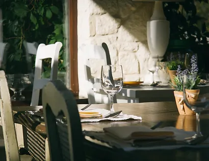

The concept of our cafe came about from the idea of not creating fusion beverages but to bring the original taste of popular "desi" tea to the UK. Founded in 2019, Cafe Green Leaf has only kept growing while achieving a strong customer base who regularly get a tea on the go.

Our concept revolves around providing beverages and snacks which are popular in the Indian Sub continent. From samosas to Bangladeshi desserts, Cafe Green leaf continues to attract many different pallets.
